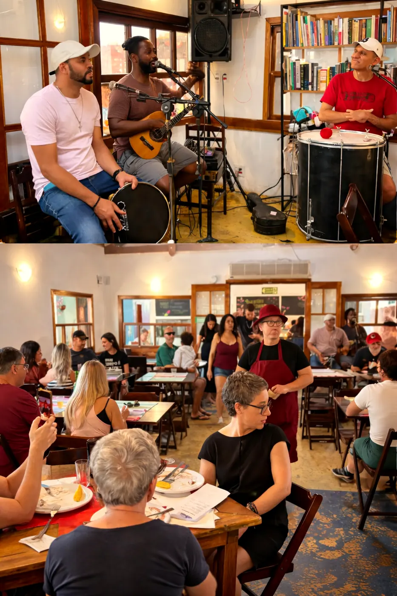

Sua história
à nossa mesa
Pequenos eventos, celebrações e encontros em torno da mesa.
Como pode ser
O Tio Dinho recebe aniversários, encontros familiares, jantares entre amigos e outras ocasiões. Podemos trabalhar com pratos do cardápio, menus fechados ou propostas desenvolvidas especialmente para a ocasião.
O formato depende do número de pessoas, do horário, do tipo de encontro e da experiência que você imagina.
Nosso formulário funciona como um primeiro briefing: quanto mais você contar, mais concreta pode ser nossa primeira devolutiva.


Menu degustação
harmonizado com literatura
Para aniversários, celebrações e encontros particulares, o Tio Dinho pode desenvolver uma edição personalizada do menu degustação harmonizado com literatura.
A proposta parte da história, da ocasião ou de um tema escolhido para construir um percurso entre pratos e textos literários. Menu e seleção de textos são pensados especialmente para aquela mesa.
Conte o que você está pensando
O formulário reúne ocasião, data, horário, número e perfil dos convidados, formato gastronômico, restrições, bebidas, estrutura e orçamento. As respostas são registradas no formulário que já usamos para organizar os pedidos de evento.
Se o formulário não abrir acima, acesse-o em uma nova aba.